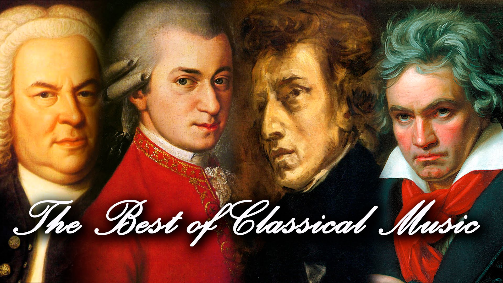
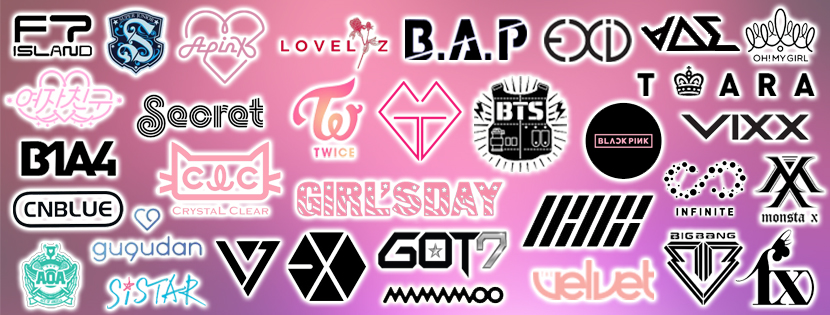

| Home | Food | Hobbies | Music | Sports |
Classical music is a serious or conventional music following long-established principles rather than a folk, jazz, or popular tradition. Classical music is played with mostly string music like the piano, harp, or other instruments in orchestra. We hear classical music played mostly in symphonies or concertos.
I first heard about kpop in 7th grade. This was because we were finding for dances for the lunar new year festival, and I came across this video. At first I thought it was an english song, but later realized it was kpop. Dnacing to it was fun, so I searched up more kpop music and fell in love. The music, lyrics, and the dance choreographies are AMAZING! Eventhough it is an unfimiliar language, I still love it.
